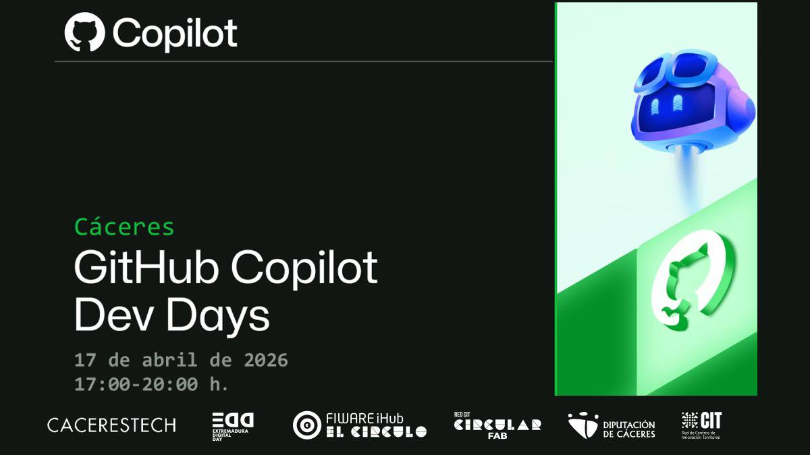

GITHUB COPILOT DEV DAYS - CÁCERES
> inicializando entorno copilot...
>>>---------<<<
: Retro Terminal Ready :
>>>---------<<<
: Retro Terminal Ready :
>>>---------<<<
Aprende GitHub Copilot con talleres prácticos, Agent Mode, Plan Mode y MCP en una experiencia real.
[ TERMINAL INTERACTIVO ]
Frases random con humor tech para calentar motores:
> cargando chistes del compilador...
[ AGENDA RÁPIDA ]
01 — GitHub Copilot: Tu compañero de IA para cada flujo de trabajo
⏱ Sesión · 30–45 min
Presentación general de GitHub Copilot.
02 — Sesión de la comunidad · By Emilio Delgado
⏱ Sesión · 30–45 min
Self-Healing Codebases: Copilot CLI + SonarQube + MCP
Demo práctica de ciclo cerrado de generación, análisis y corrección asistido por IA para mantener bases de código más limpias, seguras y mantenibles.
03 — Taller práctico
⏱ Taller · 60 min
Ejercicios prácticos y guiados usando GitHub Copilot.